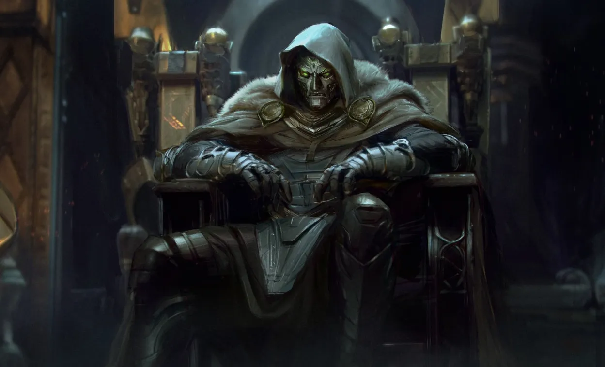
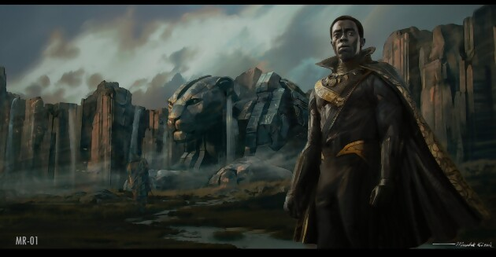
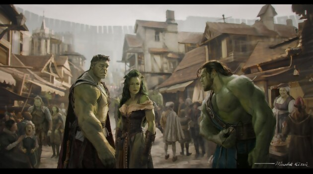

Marvel vient de subir l'une des plus grandes fuites de son histoire, révélant des informations clés sur la Phase 6 du MCU, incluant Avengers: Doomsday, Secret Wars, World War Hulk, Les Quatre Fantastiques et Vision Quest. Ces révélations proviennent d'une artiste ayant travaillé sur les concepts visuels du studio, dont les œuvres ont été accidentellement exposées sur ArtStation avant d'être rapidement supprimées.
Une fuite massive et une artiste licenciée
L’origine de cette fuite provient d’une page supposément privée sur ArtStation. Quelqu'un aurait trouvé ces images via Google Images, rendant publiques des informations capitales sur les futurs projets de Marvel. Suite à cet incident, l’artiste concernée a supprimé toutes ses œuvres et a probablement été licenciée par Marvel pour cette négligence.
Doctor Doom en God Emperor Doom
Parmi les images fuitées, l'une des plus marquantes montre Doctor Doom sous sa forme de God Emperor Doom, inspirée directement de Secret Wars (2015) de Jonathan Hickman.
Doom est assis sur un trône au style médiéval avec une longue cape blanche et une peau de bête. Doctor Strange est debout à côté de lui, jouant un rôle de conseiller, similaire à la "Main du Roi" dans Game of Thrones. Yelena Belova est présente, semblant être une exécutrice ou un chevalier au service de Doom. Reed Richards est à genoux devant Doom, tandis qu’un enfant est également présent, qui semble être Franklin Richards. Sue Storm est également présente, tenant son fils Franklin bébé.
L’univers semble inspiré de Game of Thrones, avec une structure de royaumes et de barons contrôlés par Doom.
Doctor Doom dans un contexte médiéval
Sur un autre visuel, nous retrouvons Dr Doom, toujours assis sur son trône, vêtu d'une tenue blanche semblable à celle du comic Secret Wars, entouré de plusieurs de ses sujets. À sa droite, nous distinguons clairement Dr Strange (interprété par Benedict Cumberbatch), vêtu d'une longue cape. À ses côtés, une femme en tenue de reine et un jeune garçon, également habillé en noble, se tiennent.
En se basant sur les événements du comic Secret Wars, il semblerait que cette femme soit Sue Storm, avec qui Doom aurait eu un enfant. Rappelons que nous sommes dans le Multiverse. Dans la bande dessinée, cet enfant est Valeria, une jeune fille, mais ici, il s'agirait d'un garçon.
Face à Dr Doom, un homme est agenouillé et enchaîné. Selon certains fans, il pourrait s'agir de Reed Richards, notre Mr Fantastique, tenu captif par une jeune femme que beaucoup pensent être Yelena Belova, la nouvelle Black Widow et sœur de Natasha Romanoff.
Ce qui attire particulièrement l'attention, c'est le décor. Bien que nous soyons dans un château, typique de Dr Doom, les tenues des personnages suggèrent clairement une autre époque, probablement le Moyen-Âge ou une version médiévale alternative du monde. Cela correspond aux récentes déclarations des frères Russo, réalisateurs des prochains films Avengers, qui ont affirmé vouloir surprendre les fans avec une approche plus radicale.
Placer Avengers: Doomsday dans un cadre médiéval et introduire Robert Downey Jr. en tant que Dr Doom, seigneur de ce monde, est un choix audacieux et surprenant. Une décision que nous validons à 3000%.

Les Young Avengers et leur rôle clé
Une autre image importante montre un groupe de héros réunis autour d’une table dans un bar au style médiéval-futuriste. On y retrouve :
- Star-Lord
- Wong
- Kate Bishop
- Cassie Lang
- Billy et Tommy Maximoff
- Kamala Khan (Miss Marvel)
- Un mutant ressemblant à Blob (X-Men)
Le fait que ces personnages portent leurs costumes d'origine pourrait indiquer qu'ils sont arrivés dans cet univers après un effondrement du multivers, comme dans les comics Secret Wars où certains héros se retrouvent enfermés dans des "radeaux" avant d’être libérés.
Franklin Richards et Sue Storm
Un autre concept montre Sue Storm tenant son fils Franklin bébé.

Ces images montrent l'importance de Franklin Richards dans le futur du MCU. Dans les comics, Franklin est l’un des personnages les plus puissants, capable de recréer des univers.
Black Panther : Chanda au lieu de T’Challa
Les fuites révèlent un nouveau Black Panther, mais il ne s'agit ni de T'Challa ni de son fils. Le personnage est nommé Chanda, un Black Panther ayant vécu durant la Seconde Guerre mondiale.
Il manie une arme africaine inspirée des comics. L’acteur pressenti pour le rôle serait Damson Idris.
Cela suggère que Secret Wars pourrait introduire des versions alternatives de certains héros iconiques.
World War Hulk confirmé ?
Une image montre Hulk, She-Hulk et Skaar (fils de Hulk) dans ce qui semble être une zone du Battleworld nommée Green World, peuplée uniquement de Hulks.
Dans les comics, cette zone est dirigée par Maestro, une version maléfique de Hulk. Il y a aussi une image montrant un personnage enfermé sous une cascade d’eau chaude, ce qui pourrait être Red Hulk en train d’être contenu.
Ces éléments laissent penser qu’un projet World War Hulk pourrait être en développement.
Vision Quest et Ultron féminin
Les fuites incluent également des images de White Vision accompagné de Star-Lord.

Cela suggère que Vision pourrait jouer un rôle important dans Secret Wars. Une version féminine d'Ultron apparaît également, inspirée des comics où Ultron crée une compagne similaire à la "Femme de Frankenstein".
Les Quatre Fantastiques et la Surfeuse d’Argent
Une scène montre la Surfeuse d’Argent, version féminine, faisant face à Reed Richards. Elle semble interrompre un événement des Quatre Fantastiques pour prévenir d’un danger imminent. Galactus pourrait être impliqué dans cette nouvelle version du MCU.

D'autres concept-arts montrent Emily Blunt en Sue Storm, confirmant qu'elle a été envisagée avant Vanessa Kirby.
Marvel en pleine restructuration ?
Ces fuites montrent que Marvel est en train de bâtir un énorme crossover inspiré de Secret Wars (2015), avec :
- Un univers médiéval-fantastique contrôlé par Doom
- Les Young Avengers jouant un rôle clé dans la rébellion
- L’introduction d’un Black Panther historique
- Un potentiel film World War Hulk
- Un rôle central pour Vision et Ultron
- L’arrivée de Galactus et des Quatre Fantastiques
Conclusion : Un leak qui bouleverse le MCU
Ces fuites, bien que non officielles, donnent une idée claire de la direction prise par Marvel.
Secret Wars semble être le projet le plus ambitieux depuis Avengers: Endgame. Doom pourrait être le véritable grand méchant du Multiverse Saga. Le retour de personnages emblématiques et l’introduction de nouvelles versions alternatives vont façonner un MCU complètement transformé.
Reste à voir comment Marvel réagira face à ces révélations, et si des changements seront faits pour éviter de coller trop aux fuites. Une chose est sûre : Secret Wars promet d’être un événement colossal !